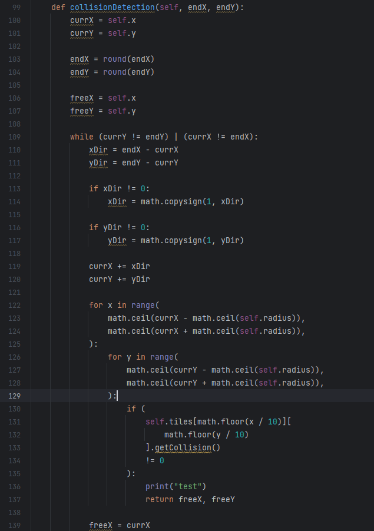

Minimum viable product:
-1v1 type of game mode controlled with one keyboard (local coop)
-5 different types of terrain
-Main Menu
-Ability to shoot for both robots
-in-game UI to show cooldown and health of robots
-Main Menu
Stretch goals:
-Different classes of robots
-Multiple attack-abilities to choose from
Collision Detection:
Implementing collision detection turned out to be a little more challenging than I thought.
In the solution I ended up with I basically iterate over every tile the robots plans to move across.
If we encounter any solid tiles within the radius of the robot, we stop moving at the last position at which there were no solid tiles within the robots radius.
Code for collision detection:

A robot hitting a wall and only being able to go away from it: